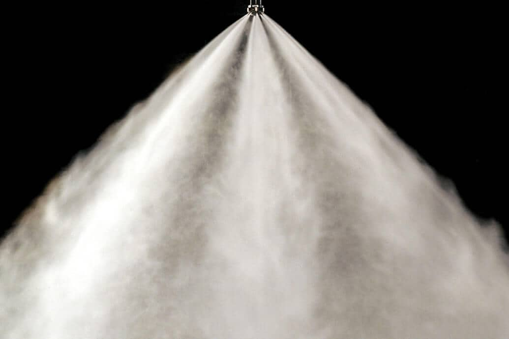
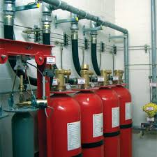
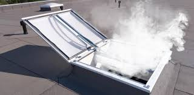

Fire safety is of vital importance in hospitals and healthcare facilities. Patients in hospitals are unable to save themselves during fire emergencies. Healthcare requires such detection together with a protection system that can control the fire before it goes out of control, including proper evacuation flexibilities. Hospital management should arrange proper and functional fire detection and protection with a 24-hour monitoring facility. Besides, it should set trained professional staff to respond immediately in a fire emergency.
EMACO has a range of solutions complying all approved international standards, including NFPA, that can comprehensively stop the fire before fire brigade authorities reach your place to save lives and properties. Moreover, we support creating awareness of fire safety, mock drills, training, and the steps that need to be employed in the face of adversity.

Hospitals are made up of multiple systems that function dynamically. All the systems are working simultaneously with consistency to manage the whole system successfully. So every portion should be classified as a risk area to avoid any hazards or failures that could ultimately damage and break the entire hospital system.
Hospitals and health care facilities pose unique challenges regarding responses in case of fire hazards. In addition to the problems posed by inpatient areas full of patients who cannot evacuate on their own, there are surgical procedures that cannot be stopped because of a fire.
Other hospital challenges include laboratories with significant quantities of flammable and potentially hazardous chemicals, equipment that require specialized response including, MRI and CAT scan machines, linear accelerators, data center, full-service commercial kitchens, large energy plants, hazardous materials storage, and so on. And, the highly dependent and immovable patients make it a difficult task to evacuate the hospital building in a rush.
While this may seem like a great challenge, EMACO can design and implement a secure and well-maintained facility, our skilled and very knowledgeable staff will ensure efficient fire detection and protection features and in good working order.
EMACO Fire Protection Solutions
Safe evacuation is a top priority in the hospital fire protection system. Automatic fast response fire suppression systems allow adequate evacuation time before the environment goes devastated. As per section-wise equipment and operation variations, fire suppression systems also vary for effective damage-free Extinguishment.
In a combination of standalone pipes and automatic sprinkler systems, we offer Water Mist, Clean Agent suppression system depending on the type of fire hazards along with the smoke management system.
Water Mist System
The Water Mist System is the perfect solution for the ICU/CCU Room, General Wards, Operation Theater, Kitchen Room, and energy section. Where ICU, operation theatre is most vulnerable, requiring a chemical-free swift response clean extinguishing protection system and water mist system fulfill all the requirements.
The Water Mist fire protection system creates water mist using small water droplets to extinguish the fire. This system mitigates fire by evaporation that cools the hazard surrounding with displacing oxygen concentration level.

Mist system comprises a series of nozzles, pump, and high-pressure tubing system; after activation, a high pressure misting pump forces water through the special spray nozzles and creates a small droplet around 5 microns and covers the fire area with protected volume.
- Nonconductive, no water damage, non-toxic.
- 10x times more effective than conventional fire systems.
- Suppress a wide variety of fires.
- Minimize smoke-related damage.
Clean Agent System
Hospital Laboratory, Radiology, and Control Room are equipped with sophisticated, sensitive electronic components with wires and cables where a waterless clean extinguishing system is mandatory for fire protection.The clean agent system is a waterless environment-friendly clean extinguishment system and, deployed immediately within 10 seconds without leaving residue or water. EMACO provides NFPA standard Novec 1230, FM-200, and Inergen gas as clean agent system chemicals that have minimize ozone depletion risk together with the environment.

FM 200 extinguishes fire by absorbing heat in addition to Novec 1230, and Inergen mitigates fire by displacing oxygen concentration levels. Among these three, Inergen gas discharge time is around 60 seconds that is comparatively long. As per client requirements and priorities, these agents are selected for applications.
- Rapid Extinguishment, waterless.
- Non-conductive, clean Extinguishment
- No smoke-related damage.
Standpipes and Sprinkler System

The premises, staircases where an automatic fire protection system is necessary, but there are no electronic or sensitive assets that can be damaged by water droplets then the fire sprinkler system is an excellent solution for that place.
A Standpipe is a type of rigid water piping that is built in a vertical position, to which fire hoses can be connected, allowing the manual application of water to the fire.
Furthermore, the wet pipe or preaction sprinkler system efficiently extinguishes the fire by zoning system that means especially activating the specific areas sprinklers to prevent burning also allow sufficient time for evacuation.
But the wet-pipe system diffuses instantly whenever alarm activates. Compared to the wet-pipe sprinkler system, the preaction system is usually used for protection because it follows two-stage fire detection for activation.
Smoke Management System

The smoke management system provides a negative pressure on the fire floor and generate positive pressure in all stairways to create proper evacuation and tenable environment for a certain period during a fire hazard.
The system is installed in Hospital Corridors and Staircases.
In hospital fire protection systems, the way to be effective in battling fires is to understand how the buildings are intended to work, what are the services and commodities of these buildings, and how the fire safety system functions, then identify all sorts of crises that can create destruction in an emergency. Considering all facts, we can say it requires lots of knowledge and proper planning to execute an appropriate fire fighting solution. EMACO team works passionately and precisely to provide the optimum level of protection with the best fire suppression system. Please call our team to get our solution overview and details.